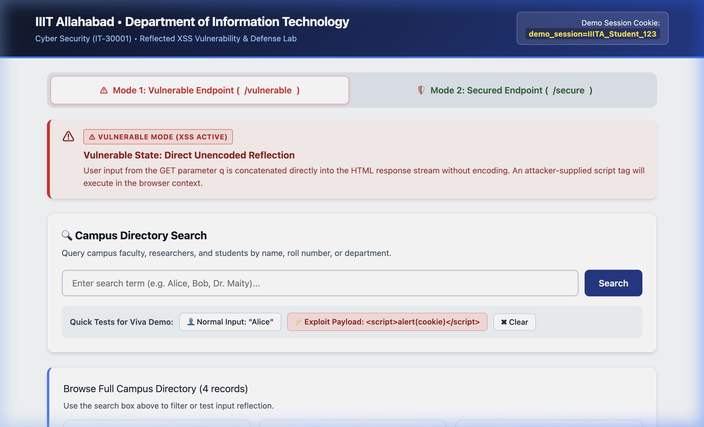
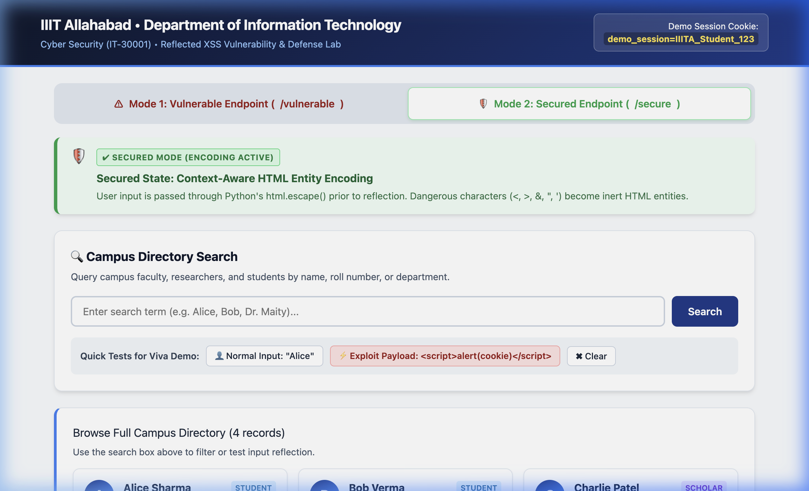

| Course: | Cyber Security (IT-30001) | Group ID: | Group 16 |
| Student Name: | BENDRAM ANJAN SHIVA REDDY | Roll Number: | IIT2024265 |
| Vulnerability Category: | Cross-Site Scripting (XSS) | Variant Implemented: | Variant 2 — Reflected XSS |
| Course Instructor: | Dr. Soumyadev Maity | Repository: | github.com/anjanshivareddy/reflected_xss |
In accordance with Section 3 of the course assignment instructions, the ownership declaration mapping my assigned vulnerability variant is formally declared in Table 1 below:
| Member Name | Roll Number | Category | Variant Implemented |
|---|---|---|---|
| BENDRAM ANJAN SHIVA REDDY | IIT2024265 | Cross-Site Scripting (XSS) | Reflected XSS (Variant 2) |
Cross-Site Scripting (XSS) (cataloged as CWE-79) is a major client-side code injection vulnerability. It occurs when a web server receives untrusted input from an external user and renders it into a web document delivered to the browser without adequate contextual validation, sanitization, or entity encoding. Because web browsers execute all scripts originating from a trusted server origin under the Same-Origin Policy (SOP), injected malicious scripts execute with the full privileges of the victim's authenticated session.
As defined in Table 1 of the course assignment brief, Cross-Site Scripting is categorized into two canonical variants:
| Property | Variant 1: Stored XSS (Persistent) | Variant 2: Reflected XSS (Non-Persistent) |
|---|---|---|
| Storage Mechanism | Persisted permanently in server storage (database, forum post, comment system). | Non-persistent; never stored on disk. Reflected immediately in the HTTP response. |
| Delivery Vector | Any user visiting the compromised webpage automatically loads the stored script. | Victim must be coerced into clicking a crafted hyperlink containing payload parameters (e.g., via phishing). |
| Victim Scope | Broad, multi-victim impact (asynchronous execution against any visitor). | Targeted single-session execution per request. |
| Server Role | Passive storage host; retrieves bad data during subsequent read queries. | Active reflector; echoes request parameter directly into response HTML stream. |
Variant 1: Stored XSS (Persistent XSS): In Stored XSS, the attacker submits malicious payload data to the server (e.g., a student discussion post or user profile field). The server saves this raw input into a database. Later, whenever legitimate users browse to that view, the application constructs the response HTML incorporating the contaminated database record without escaping. This results in automatic script execution in every visitor's browser without requiring individual phishing lures.
Variant 2: Reflected XSS (Non-Persistent XSS) — Assigned Variant: In Reflected XSS, the injected payload is delivered as part of the immediate HTTP request (typically as an HTTP GET query parameter such as ?q=<script>...). The server takes this parameter and immediately echoes it back into the resulting HTML response body. Execution occurs instantly upon response rendering within the specific victim's browser session.
To model Reflected XSS, a complete educational web application was developed in Python using Flask (app.py), simulating a Campus Directory Search for IIIT Allahabad.
The vulnerable endpoint is mapped to /vulnerable. It extracts the search query from the GET parameter q and interpolates it directly into the HTML response without output encoding:
# (a) VULNERABLE IMPLEMENTATION: Unencoded user input reflected directly in HTML.
@app.route('/vulnerable')
def vulnerable_search():
query = request.args.get('q', '')
reflected_output = query # Injected directly into HTML response document
rendered_html = build_page_template(
mode='vulnerable',
query=query,
reflected_output=reflected_output,
is_vulnerable=True
)
response = make_response(rendered_html)
# Set non-sensitive session cookie without HttpOnly to demonstrate cookie theft
response.set_cookie('demo_session', 'IIITA_Student_123', samesite='Lax')
return response
Flaw Breakdown: Inside build_page_template(), the variable reflected_output is placed directly into the markup:
<span class="reflected-term" id="reflected-output">{reflected_output}</span>.
Because the server performs no encoding or sanitization, user data breaches the boundary between markup structure and text content.
1. Exact Working Exploit Payload:
<script>alert('Reflected XSS Executed! Cookie: ' + document.cookie)</script>2. Full HTTP GET Exploit Request:
GET /vulnerable?q=%3Cscript%3Ealert('Reflected+XSS+Executed!+Cookie:+'+%2B+document.cookie)%3C/script%3E HTTP/1.1
Host: 127.0.0.1:5001
3. Execution Mechanics & Cookie Access:
When the Flask server returns the response, the browser parser encounters <script>, enters the script data parsing state, and executes the contained JavaScript. The script reads document.cookie, successfully exfiltrating the demonstration session cookie: demo_session=IIITA_Student_123.

/vulnerable — Browser modal alert displaying the exfiltrated session cookie (demo_session=IIITA_Student_123).
The defense is implemented on route /secure using Python's built-in html.escape() module function, providing standard context-aware HTML entity encoding:
# (d) MITIGATION IMPLEMENTED: Context-aware HTML entity encoding.
@app.route('/secure')
def secure_search():
query = request.args.get('q', '')
# Context-aware output encoding: transforms <, >, &, ", ' into safe entities
safe_query = html.escape(query)
reflected_output = safe_query
rendered_html = build_page_template(
mode='secure',
query=query,
reflected_output=reflected_output,
is_vulnerable=False
)
response = make_response(rendered_html)
response.set_cookie('demo_session', 'IIITA_Student_123', samesite='Lax')
return responseEntity Conversion Mechanics: Special syntax characters are converted to named entities:
| Character | Exploit Context | Safe HTML Entity | Browser DOM Effect |
|---|---|---|---|
< | Opens script or element tag | < | Rendered as literal glyph < |
> | Closes element tag | > | Rendered as literal glyph > |
& | Introduces entity reference | & | Rendered as literal glyph & |
" | Breaks attribute delimiter | " | Rendered as literal glyph " |
' | Breaks single-quoted attribute | ' | Rendered as literal glyph ' |
Verification of Blocked Exploit: When the identical payload is submitted to /secure, the HTTP response delivers <script>...</script>. The browser HTML parser maintains the DATA_STATE, treating the string purely as character text. Zero script execution occurs, no alert fires, and cookie confidentiality is preserved.

/secure) — Payload rendered harmlessly as plain text; Inspector confirms entity encoding (<script>).|safe in Jinja2 or dangerouslySetInnerHTML in React), all dynamically injected variables are automatically converted into safe HTML entities before rendering.
<b>, <i>, or <a>). An HTML sanitizer (e.g., DOMPurify on the client or Bleach on the server) parses the untrusted input into a DOM tree and filters it against a strict allow-list. Dangerous active elements (<script>, <iframe>, <object>) and event handlers (onerror, onload, onclick, javascript: URLs) are stripped, while harmless markup is preserved.
Content-Security-Policy: default-src 'self'; script-src 'self' 'nonce-xyz123') acting as a browser-enforced defense-in-depth barrier. It instructs the browser to restrict script execution exclusively to trusted host domains or to script blocks bearing a valid cryptographic nonce. Even if an unencoded reflected XSS flaw exists on the page, CSP actively prevents the injected inline <script> or eval() from executing.
HttpOnly attribute is attached to sensitive session cookies via the Set-Cookie response header (e.g., Set-Cookie: session=xyz; Secure; HttpOnly; SameSite=Lax). This instructs modern browsers that the cookie must never be accessible through client-side JavaScript APIs such as document.cookie. While HttpOnly does not prevent script injection itself, it eliminates the primary risk of XSS — automated credential theft and session hijacking.
element.innerHTML, document.write()). Developers mitigate this by consistently adopting safe, non-executable DOM sinks such as element.textContent or element.innerText, which guarantee that input is processed exclusively as character nodes rather than executable markup.
| Execution Phase | Vulnerable Mode (/vulnerable) |
Secured Mode (/secure) |
|---|---|---|
| HTTP Request | GET /vulnerable?q=<script>... |
GET /secure?q=<script>... |
| Server Processing | Direct string interpolation without escaping | Contextual entity encoding via html.escape() |
| Response Fragment | <span><script>alert(...)</script></span> |
<span><script>alert(...)</script></span> |
| Browser Parsing | Transitions to SCRIPT_DATA_STATE |
Remains strictly in DATA_STATE |
| Exploit Execution | JavaScript executes; cookie stolen in alert | Zero execution; payload displayed as plain text |
This lab investigated the vulnerability mechanics and defensive architecture of Reflected Cross-Site Scripting (Variant 2). The experiment proved that untrusted input must never be reflected into an HTML document context without contextual encoding. By applying Context-Aware Output Encoding via html.escape(), the flaw was successfully mitigated. Complementary defenses — framework auto-escaping, HTML sanitizers, Content Security Policy (CSP), HttpOnly cookies, and safe DOM sinks — were documented to provide comprehensive protection against client-side code injection.